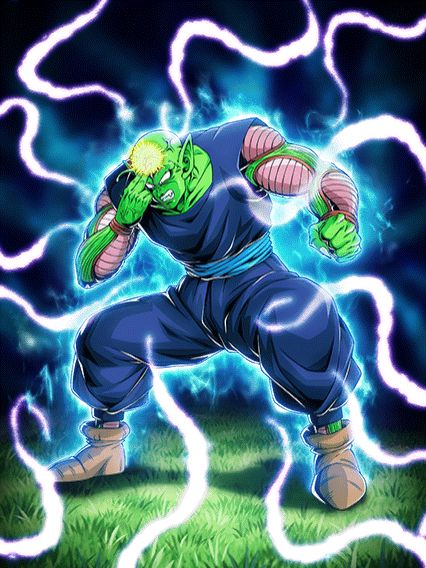

DATA DE LANÇAMENTO: 14/06/2026

Um Card que fica muito engraçado fora de contexto
O Piccolo tem um bom dano e defesa e até suporte pra "Earth-Bred Fighters" e "Saiyan Saga"
Ele também tem 70% de chance de desvio e bastante redução de dano no começo da luta, o que torna ele um Card bem simples, mas confiável
A parte engraçada da Passiva dele é ele ganhar mais dano e defesa, crítico garantido e 60% de redução de dano depois de 9 TURNOS 😭😭😭
O motivo disso é o fato da Standby dele durar 10 turnos, sendo a Standby com maior duração até agora.
Nota dos Links:
06/10
Nota das Categorias:
09/10
Você chegou ao fim dessa página!
Obrigado por ler tudo, e fica a vontade pra ver outras